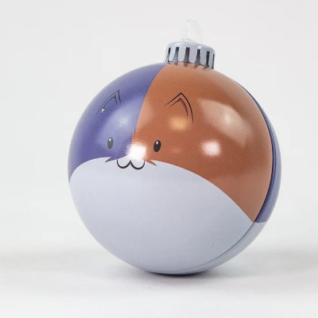
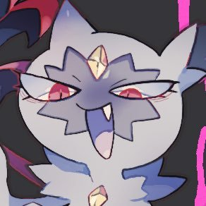
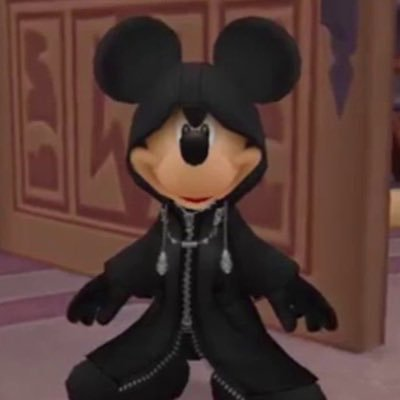
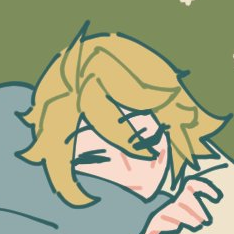
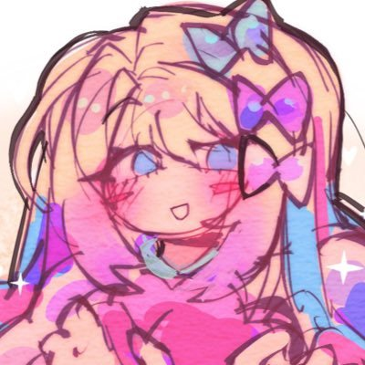
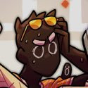
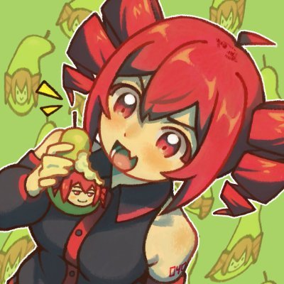

Griffin
Griffin.... You've always been one of the funniest people I've known and that point has been proven even further this year. Not only that, but I've seen you grow insanely with your music and artistic talent. You are one of the best musicians I know, and not only that but you're also one of the closest friends I have. We've known eachother since early 2021.. thats crazy man. Glad to say I'm still your friend after so long!
Goji
I cannot believe how much I've gotten to see you grow. You are so fucking talented it's insane, going from shit like Desktop V1 to ANY song you've made in recent memory isn't even comparable. I'm so glad I know you and we're still close, you're so funny and creative and I'm happy to say you're one of the closest friends I have. Meeting you from a help wanted post for VS A Shitty Laptop I posted in the KADE ENGINE SERVER is insane üò≠
Squish
Getting to know you over the course of D-Sides development has been very.. interesting.. to say the least LOL. You've always been a really chill and hilarious guy with an INSANE work drive.. sometimes I worry you overwork yourself :P I'm glad we're friends, we should definitely hang out more though. I miss those stupid late night calls where we would watch random videos or play a terrible game. Keep being awesome
Beth
I think the fact you're still one of the closest friends I know despite everything that we've been through is CRAZY. Bonding over summer in 2022 was so fun and I'd give anything to have time like that again LOL.. You're super smart and deserve a lot more respect for the work you do, the things you've made for FAF are INSANE?? I can't even begin to think on how you made the overworld editor, that's some next level bullshit I'll never understand. You're a goat, but you look too much like sonic.exe and that scares me
Vortex
I can't get over the fact we met because of hex mod. Of all the things we could've connected over, we connected over the fuckin detected modchartüò≠üò≠üò≠Seriously though, you're a really good guy and I appreaciate you so much. Being able to have an in person friend who I don't need to change myself around is such a nice breath of fresh air and I love being around you so much. You and Julia are 100% my closest friends, I can't thank yall enough for the things you've done for me
Bug
You've always been a super talented and fun person to be around, you've been a good shoulder for me to cry on at times and have always done a good job cheering me up. I only hope to be able to return the favor some day! WE GOTTA TALK MORE THOUGH. LIKE. ASAP.
.png)
Clover
You're the head of 3 of my friend groups. Why? Why are you so big and greedy you disgusting green fuck? Seriously though I love you buddy. You are such a kind and funny individual who really cares about all their friends and I appreciate you so much more than you realize. I want to TALK TO YOU MORE THOUGH... RAHH..
Pen
I think you're the second most intimidating person I know personally, only beaten by Tony LOL. But seriously I do love talking to you on the off chance we do speak, you have a infectious laugh with a bubbly and optimistic personality that always seems to put me in a better mood. Keep at the content grind, you're gonna keep getting bigger and bigger and you deserve it more than anyone!

Kloogy
You're my right hand man, you've always been there for me to vent my frustrations and you've always helped me get back on my feet when I've been at my lowest. You're a funny, sweet, caring individual and I want to see you go far. Keep being as great as you are, you'll form unbreakable bonds like ours that will last for a lifetime.
Srife
I love you so so so much man I don't even know where to begin, I'm so glad I met you and have been given the chance to be your friend. You are 100% my best online friend, you've seen me at my absolute lowest and stuck by my side no matter what. I love you wgarlord!
.jpg)
Fredrick
You might actually be the funniest person I know, I can't name a single call I've had with you where I didn't burst out laughing at least once. You're a great friend, a great person and a great switch fortnite player.
Everly
While we don't talk much outside of work, the few interactions we have had are oh so pleasant... You're SO insanely talented and the things I see you making behind closed doors are wild man. I hope to talk to you more this upcoming year!
Lydian
One of two helltaker pfp freaks... You've always been super duper chill and I always appreciate your company! You have made some of my favorite songs from multiple projects, and you GOTTA give yourself more credit! You're amazing at what you do, keep improving and keep being awesome.
Lex
In the far and few between calls / talks we have, you are always so funny and nice to talk to. Your artistic talent is insane man, every month your art gets better along with your music. Your improvement is insane, I hope to hang out with you more next year!
Peak
So glad I still have ties with you man, after coder's united I was worried we wouldn't ever interact again but I'm SO SO SO glad that's not the case. You're the #1 priv tweet liker, and while that may seem like it doesn't matter to many, it always makes me realize that my thoughts are always heard and seen. You are the GOAT GOAT ZOAT ZOAT!
Orby
The biggest belly bumper in the world..? You're a really sweet friend and you're always a joy to be around, even if you keep shoving your fingers up your butt. The stuff you cranked out for weekly is insane man, give yourself a big break...

Emihead
I WANT TO TALK TO YOU MORE. OK? YOU'RE REALLY FUNNY AND SUPER NICE AND I APPRECIATE YOUR COMPANY OK? YOU'RE AWESOME OK? FUCK. GOD. JESUS. Seriously though from the few times we've hung out in call, you're always a joy to have around and have something funny or interesting to add. You might be a little insane though only kinda
Loggo
The amount of times I've burst out laughing because of some batshit insane thing you've said is too many to count. You're a insanely funny guy and I always have a blast when you're around. Your art has improved a ton this year and it's been fun to see your progress, keep at it!
Dan
We share a scary amount of hyperfixations. I'VE WANTED TO POINT THIS OUT FOR SO LONG, WE BOTH LOVE ITEMLABEL, CHIIKAWA, AND A BUNCH OF OTHER RANDOM SHIT ITS SO FUNNY.. We've always meshed together well, talking with you is always really fun! You're a super talented and kindhearted person, never lose your charm.

Decoy
Are you insane? Seriously, some of the shit you say is something that would only come out of a aslym. You always bring so much personality and hilarity to calls, I'm so glad to say I know you and am even happier to call you a friend. Merry christmas Jongos!

Dom
Getting to know you more over this past year has been awesome. You're a super skilled musician and artist, I can only imagine the shit you're gonna do in the future.
Jack
FAF has and always will hold a very special place in my heart as one of the most fun and special projects I have ever been involved in, and I want to thank you for making that environment a place I am never upset in. You have put in so much work to not only the mod itself but the people and communication, you go the extra mile and it really shows. You're a great guy and I love hanging out with you, I hope to do even more so this next year!
Basil
Ever since I've met you, you've always come off as the kindest person in the world, and that hasn't changed one bit. You're a very caring and special individual who has always shown a great amount of passion into everything they do. I really appreaciate and love you buddy, keep being unapologetically you!

Ari
A fellow hollow knight head.... You're always a joy to be around, you're always upbeat in calls and it's such a nice change of pace to hang out with you. I hope to talk to you more next year!

Purple
I like to think I'm a stranger passing by a house with really loud music and partying whenever I join your friend server LOL, you're such a crazy group it's always fun to hang out there. You're a really chill guy and I love talking to you about things even as simple as music we both like, I hope to see you go far with your art and music, you got the skill for it!

Victor
Sometimes I'm scared of the shit you know man. You know things about EXE mod that I couldn't have even guessed, I think you know more about some exe songs than the actual composers LOL. Your fixation on this stuff is really charming though, don't let me poking fun discourage you from having an interest like that. You're a very down to earth guy and I love talking to you!
Scrumbo
I may joke a lot, but I really look up to your character man. You're a really stand up guy and I love hearing your thoughts on things or just general life advice, you always bring something positive to the table and it's always ALWAYS appreciated. You're a super talented and amazing person, I love you buddy
Leo
You've always been a really sweet and fun guy to hang around in D-Sides, I always appreciate your company and love to work with you! Hopefully we talk more now that you're on legacy..
Paige
God man we gotta talk more. You're a really funny guy and I love every time we have a stupid goofy discussion, hell even talking about mod work is fun. You're a really upbeat person and you always make me smile!

Naj
D1 KANYE GLAZER üçÜüí¶üí¶ Seriously though I love hanging out with you so much. Ever since we met I've loved talking to you about new music or things I've been listening to, it's great having an outlet like that to share my interests. Can't wait for bully 2025!
Ito
Man I'm so glad I'm as close as I am with you. You're such a caring person and having a person like you to talk about random things or my troubles has done wonders for me, I hope to return the favor to you in the future. You're an amazing friend, a talented artist and a fantastic person. Love you buddy!
Spag
The other helltaker pfp.. You've always been really sweet and I NEED to hang out with you more this upcoming year, but you may be too deep into the furry community to talk to little ol' me.. sigh... Love your art, love you, keep being awesome. also talk in faf more.
Flag
Man you're such a goober, I don't know how else to desribe it. You and Griffin are such a dynamic duo, you work so well off of eachother and create such a happy environment that makes everything enjoyable. The shit you come up with is so stupid, I love your way of looking at things and always finding something positive out of it. You're a great guy, keep your outlook.
Tony
The most intimidating person I know... You have a lot of passion behind all the things you work on and develop and it REALLY shows, everything I see from you has so much love and care behind it from not only you but everyone involved with it, you really know how to make something special. Your work and talent is crazy, I admire you a lot. Hope to talk to you more next year!
Ironik
Being able to talk with you more near the end of the year has been such a nice change of pace. You're a super funny and awesome guy to hang out with, you're insanely talented and creative with everything you do and it shows. So so so excited to hang out with you more this year, hoping for more spongebob.
Carol
From the few times we've fully interacted, I've always had a blast. You're a super sweet and chill person who I always love to talk to, now that Buddy Bundle is a thing I'll definitely be talking to you a bit more! Love ya buddy

Lava
I hope to talk to you man, you're ungodly funny. Some of the shit you say and do is so cool and downright hilarious, you're a great guy and I want to talk to you more!!!
Alpha
Fuuccckkk man I really wanna hang out with you more. I've said that like a billion times for a billion different people but I really mean it, hanging out with you in bunbeats / weekly is so fun. You bring so much character and fun to every place you're in, you're appreciated more than you could ever realize.
Stock
Getting to know you simply because I asked you on main for your D-Sides GF art is REALLY funny... She's my biggest kin, so we can bond very quick LOL. I wanna talk to you more, we share a lot of interests and like a lot of the same artists, you're super chill and talking to you is always nice!
Ellis
You're probably the most level-headed, sweet and passionate people I know. The amount of care into each art piece you make is insane, I love everything you make and admire your character and values a lot. I'm glad we've been able to talk as much as we have this past year, you're a great person and I love being around you!

Fried
Fuuuuccckkkk man I love love love your music. You're seriously talented in everything you do, even in things that don't deserve talent... I don't think I'm EVER gonna get over how seriously you and Srife take Huniepop. You're really nice though, I love talking to you in goop troop! I hope to hang out more this next year!
Cross
You've always been one of the most down to earth and smart people I've ever known. Some of the shit you can do is insane, the amount of stuff you know about computers and code is crazy and way beyond anything I could ever understand. You're talented in every field you go into and you don't give yourself the credit for it, you deserve it. I love ya!
Marco
You are such an amazing person to be around, you're so creative, funny, sweet, caring and so many more things I can't even fit it into one message. I owe you the world for introducing me to so many people I can call friends, especially you. You're one of the best people I've ever met, I love you buddy.
Nate
I wanna talk to you more.. I'm glad we share a lot of spaces, you're a super talented and nice guy, I love all your stuff n everything you make. Keep being awesome..
Wahbox
I'm glad we get to talk as much as we do, every early morning / late night VC I've had with you and Fried always has such a welcoming kinda feeling to it, I hope to share more memories with you next year!
Leth
Getting to know you has been pretty nice! You're a very smart and chill person, working alongside you on weekly has been fun and I'm happy to continue that bond throughout bunbeats and any other future endeavors!
Ash
Alongside srife, you're one of my closest friends by far. I'm lucky to say that and I appreciate it every time we talk. You're one of the funniest and most caring people I've ever met, never lose that spark that makes you you. Love ya buddy.
Ike
One of the most down to earth people I know, you're always so fun to talk to and so so talented.. I love your little animated music video thingies!! We gotta talk more next year..
Avery
We haven't talked that much but you're really chill and I wanna talk more. You've always got a funny energy around you and always brighten the mood, hope to see you have a brighter year
Carrie
Getting to know you in Hopscotch has been really sweet, I hope to talk to you more. You fit in really well with all of us and always bring a good laugh, love ya buddy!
Raven
Getting to know you over the past year has been a lot better than I thought it would admittedly LMAO, you're a really nice caring person and you put a lot of care and passion into everything you make and it shows. I hope to spread the curse of shipwrecked as well as you do someday.
Krea
God I'm so glad we're on good terms.. For a while I was really terrified we wouldn't mesh together because of some old outside drama that only vaguely involves you, but I'm so glad I settled it and we can be friends. You're a super sweet and nice person who is CRAZY talented. I can't fathom how you make the shit you do, it hurts my head just thinking about it..